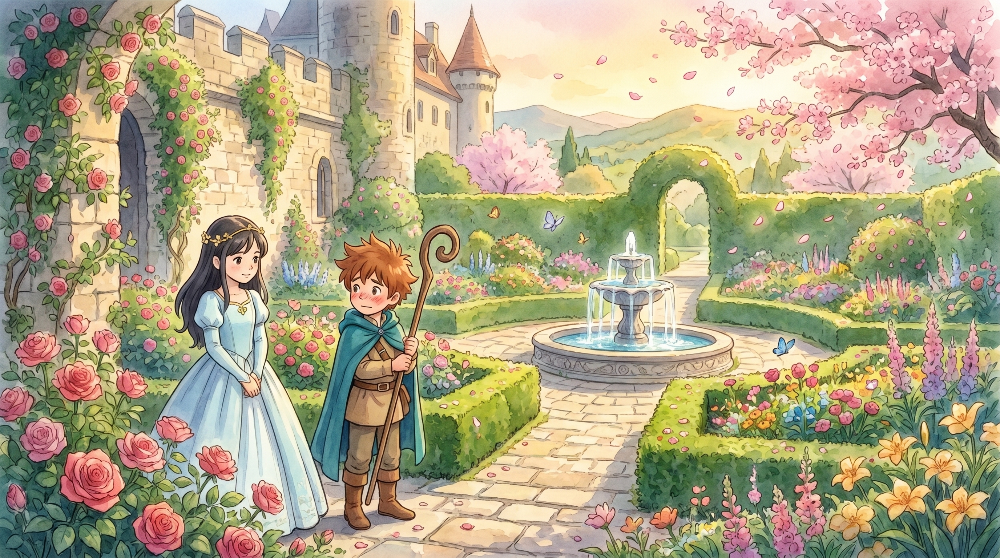
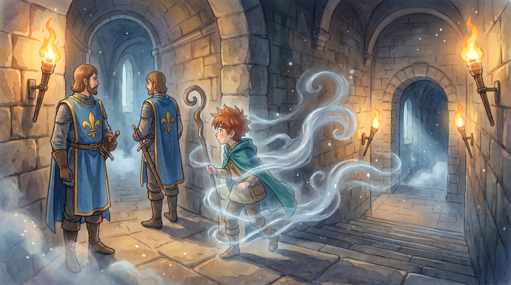
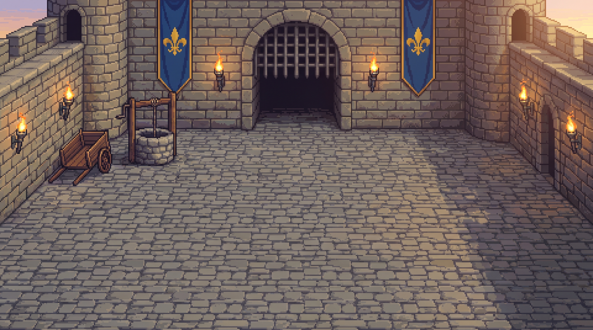
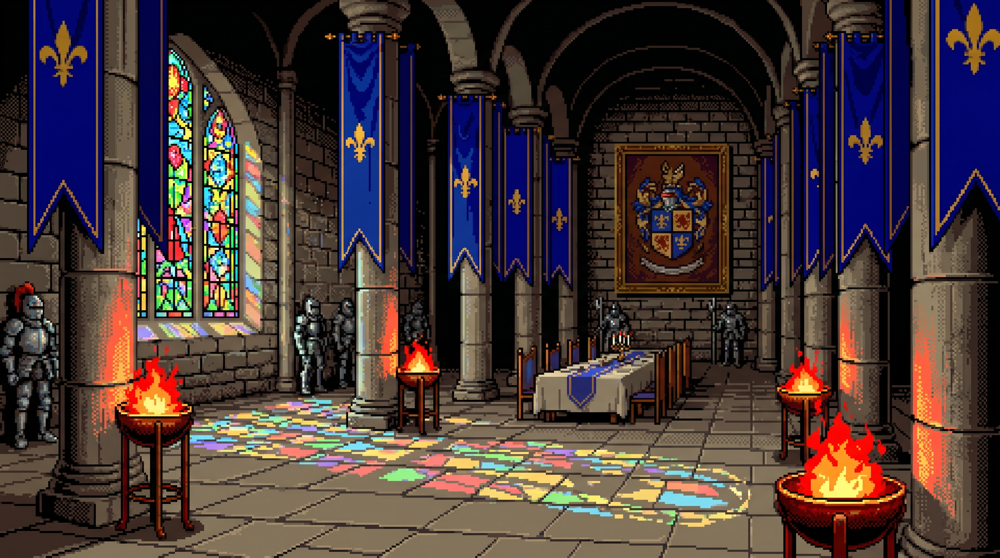
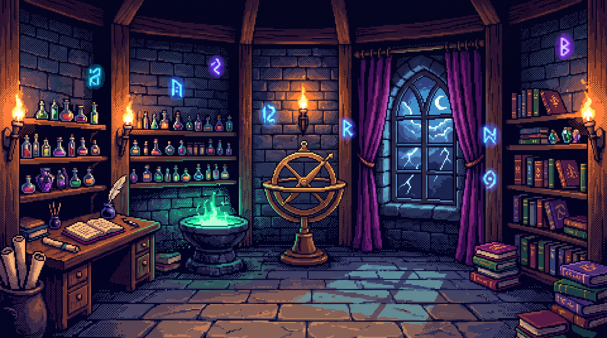
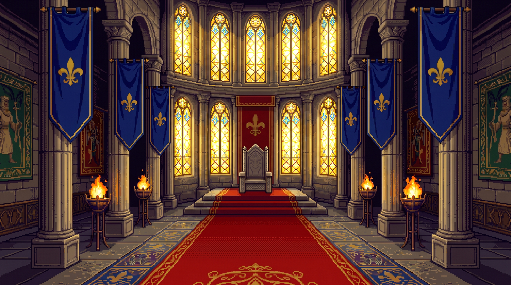

Whispers of Ravenholt · Deel 2 · concept & storyboard
De Schaduw van de Koning
Finn is door de poort kasteel Eldoria binnengeglipt. Zijn vader zit ergens gevangen — maar de echte vijand is de hofmagiër Magister Corvain, die de koning heeft betoverd en de bron liet opdrogen om het land te verzwakken. Finn moet ongezien door het kasteel sluipen, een slaapdrank brouwen, een nieuwe spreuk leren — Lumen Veritas, het licht der waarheid — zijn vader bevrijden en de betovering verbreken.
Scenes 8Speelduur ± 20–25 minMoeilijkheid uitdagender dan Deel 1Nieuwe spreuken Velum Nebulae · Lumen Veritas
Verhaal in het kort
Deel 1 eindigde toen Finn met de drakenspreuk de poortwacht verjoeg en het kasteel binnenstapte. In Deel 2 ontdekt hij de waarheid: niet de koning, maar diens hofmagiër Corvain trekt aan de touwtjes. Finn werkt zich laag voor laag omhoog door het kasteel — binnenplaats → grote hal → keuken/kelder → kerker → toren → troonzaal — verzamelt en combineert voorwerpen, vermomt zich, brouwt, leert een tweede spreuk en eindigt in een spreukenduel waarin hij eerst de waarheid onthult (Lumen Veritas) en dan de draak oproept (Draconis Umbra) om Corvain te verslaan en zijn vader én de koning te bevrijden.
De 6 scenes & puzzels
SCENE 1 · DE BINNENPLAATS
Ongezien naar binnen
Finn staat op de binnenplaats; een tweede valhek en een schildwacht versperren de weg naar de hal. Hij ontmoet zijn bondgenoot voor dit deel: een kasteelkat (of keukenjongen) die hem op weg helpt.
🧩 Puzzel — afleiding + vermomming
Gooi een steentje in de put → de echo lokt de schildwacht weg van zijn post.
Pak het pagekleed van de waslijn → verkleed je → kom langs de volgende wachten.
Bedien het tegenwicht van het valhek (ketting + emmer met water) om het te heffen.
🎒 Voorwerpen & figuren
Items: steentje, pagekleed (vermomming), emmer
Nieuw: kasteelkat (bondgenoot), schildwacht
NIEUW: vermomminghergebruik: afleiding

SCENE 1B · DE KASTEELTUIN
De prinses tussen de rozen
Een prachtige, groene kasteeltuin vol bloei. Hier loopt prinses Elara, de dochter van de koning — bezorgd om haar vader die de laatste tijd “niet zichzelf” is. Finn is stiekem smoorverliefd op haar en durft zich amper te laten zien.
🧩 Puzzel — een roos voor de prinses
De mooiste roos in de tuin is verwelkt. Spreek de dans-spreuk uit (uit Deel 1) → de roos bloeit weer prachtig op.
Geef de bloeiende roos aan prinses Elara → ze glimlacht en vat vertrouwen.
Uit dankbaarheid geeft ze Finn een koninklijk zegel (opent een vergrendelde deur) én de waarschuwing: “Pas op voor Corvain — hij fluistert mijn vader vergif in.”
Beat: Finn bloost; motiveert hem extra om de koning te bevrijden
hergebruik: dans-spreuk + geven-aan-NPC
SCENE 2 · DE GROTE HAL
Het koninklijk wapen
Een weidse hal vol patrouillerende wachten. Aan de muur hangt een portret met het koninklijke wapenschild — de aanwijzing voor de volgorde waarin je de bakens moet ontsteken.
🧩 Puzzel — bakens op volgorde
Bestudeer het wapenschild op het portret (kleuren/symbolen → volgorde).
Ontsteek met een fakkel de vier bakens in de juiste volgorde.
Goed → een geheime doorgang naar de keukenkelder schuift open. (timing met de patrouille!)
🎒 Voorwerpen & figuren
Items: fakkel, wapenschild-aanwijzing
Figuren: patrouillewacht(en)
hergebruik: "juiste volgorde"-puzzel (rune/tegel)

SCENE 2B · DE ONZICHTBAARHEIDSSPREUK
Velum Nebulae — Sluier van Mist
Niet elke wacht laat zich foppen met een vermomming. Voor de zwaarbewaakte trap naar de kerker heeft Finn een tweede nieuwe spreuk nodig: onzichtbaarheid.
🧩 Vinden & maken
Vindplaats: een gescheurde spreukpagina ligt verstopt ín een harnas in de Grote Hal (je hoort iets rammelen als je passeert).
Ingrediënt: de pagina vraagt om “een ademtocht ochtendmist” → vang in de kasteeltuin bij dageraad mist in een leeg flesje.
Schrijven: met inkt + veer schrijf je Velum Nebulae in je toverboek (zoals in Deel 1).
🧩 Gebruik
Spreek Velum Nebulae uit → Finn wordt kort onzichtbaar in een mantel van mist.
Glip zo langs de twee elite-wachten die de keldertrap blokkeren (waar vermomming en afleiding niet werken).
Bouw: nieuwe spreuk + korte “onzichtbaar”-timer; vlag invisible die de elite-wachten je laat negeren.
SCENE 3 · DE KEUKEN & KELDER
De slaapdrank
De goedlachse kok bewaakt zijn keuken. Finn moet ingrediënten bemachtigen en bij het haardvuur een slaapdrank brouwen voor de cipier verderop.
🧩 Puzzel — brouwen + afleiding
Leid de kok af (laat de pot overkoken / een vallende pan) → grijp het slaapkruid van het rek.
Combineer in een kruik: slaapkruid + melk + honing → verwarm boven het vuur → slaapdrank.
Pak ook brood & kaas mee (voor een wachthond in de kerker).
🎒 Voorwerpen & figuren
Items: lege kruik, slaapkruid, melk, honing → slaapdrank; brood, kaas
Een slaperige cipier zit met zijn sleutelring aan een tafeltje; in de cel ernaast grijpt Finns vader hoopvol de tralies. Een wachthond ligt in de weg.
🧩 Puzzel — sleutel bemachtigen
Gooi brood/kaas naar de hond → hij is afgeleid en wordt rustig.
Doe de slaapdrank in de tankard van de cipier → hij valt in diepe slaap.
De sleutelring hangt te ver → vis hem met een haak/bezem → open de cel.
🎒 Voorwerpen & figuren · twist
Items: slaapdrank, brood/kaas, haak → sleutelring
Vader geeft: de tweede spreukpagina (Lumen Veritas) + de waarschuwing: "Het is niet de koning — het is Corvain. Verbreek de illusie met het licht der waarheid."
hergebruik: sleutel/slot + "iets behendigs"
SCENE 5 · DE TOREN VAN CORVAIN
Het licht der waarheid
Hoog in de toren ligt Corvains studeerkamer vol duistere magie. Hier schrijft Finn de nieuwe spreuk in zijn toverboek en dwingt hij Corvain in een eerste confrontatie.
🧩 Puzzel — spiegels & spreuk schrijven
Schrijf met inkt + veer de gevonden spreukpagina in je toverboek → Lumen Veritas.
Richt met draaibare spiegels het maanlicht uit het raam op Corvains duistere bekken → de illusie scheurt.
Kort spreukenduel → Corvain vlucht naar de troonzaal.
Corvain houdt de betoverde koning in zijn greep. Finn moet de spreuken in de juiste volgorde uitspreken om te winnen — eerst de waarheid, dan de draak.
🧩 Finale — spreukvolgorde
1. Lumen Veritas → het licht onthult Corvains ware gedaante en breekt de betovering van de koning.
2. Draconis Umbra → de drakenschaduw verjaagt Corvain definitief.
De bron stroomt weer, de koning is vrij, vader & Finn herenigd. Eindcinematic + "Deel 2 uitgespeeld".
🎒 Figuren · slot
Figuren: Corvain, de betoverde koning, vader
Beloning: held van Eldoria; haak naar een mogelijk Deel 3
hergebruik: cinematic + duel
Pixel-art achtergronden (in-game)
Eerste hoge-res pixel-art achtergronden in de 16-bit stijl van het spel — zonder personages (die komen als losse sprites er bovenop). Dit worden de speelbare scène-achtergronden van Deel 2.

1 · Binnenplaats1B · Kasteeltuin

2 · Grote Hal3 · Keuken & Kelder4 · Kerker

5 · Toren van Corvain

6 · Troonzaal
Bouwklare puzzels
🧩 1 · Bakens op volgorde (Grote Hal)
Doel: de geheime doorgang naar de kelder openen.
Aanwijzing: het wapenschild op het portret toont 4 symbolen in een vaste kleurvolgorde (bv. 🦁 rood → ⚜️ blauw → 🐉 groen → 👑 goud).
Oplossing: ontsteek met de fakkel de 4 bakens in die volgorde. Fout → alle bakens doven en de patrouille komt dichterbij.
Bouw: hergebruik de "juiste-volgorde"-popup (rune/tegel) met 4 knoppen; vlag hallOpen.
🧩 2 · Slaapdrank brouwen (Keuken)
Doel: een drank waarmee de cipier in slaap valt.
Recept:slaapkruid + melk + honing in een lege kruik, verwarmd boven het haardvuur.
Truc: leid de kok af (laat de pot overkoken) → pak het slaapkruid van het rek.
Bouw: hergebruik de recept/ketel-mechaniek (zoals de drakenspreuk-ingrediënten); resultaat-item slaapdrank.
🧩 3 · Spiegel & licht (Toren)
Doel: Corvains illusie verbreken vóór het duel.
Oplossing: draai 2–3 spiegels zo dat de maanlichtstraal uit het raam via de spiegels op het duistere bekken valt.
Bouw:nieuw licht-puzzel-paneel: per spiegel een rotatiestand; correct pad → vlag illusionBroken.
🧩 4 · Finale-spreukvolgorde (Troonzaal)
Doel: Corvain verslaan zonder de koning te raken.
Oplossing: spreek 1. Lumen Veritas (onthult de waarheid, breekt de koningsbetovering) → daarna 2. Draconis Umbra (verjaagt Corvain). Verkeerde volgorde → het mislukt, probeer opnieuw.
Bouw: hergebruik de cast-knop + cinematic; controleer de vlag-volgorde truthCast → dragonCast.
Kleinere puzzels (afleiding bij de put, vermomming met het pagekleed, hond met kaas, sleutel vissen met een haak) staan per scène hierboven beschreven.
Onder de motorkap
Hergebruik (engine kan dit al)
"Juiste-volgorde"-puzzel (rune-/tegelpaneel) → bakens in de grote hal
Brouwen/recept (ketel) → de slaapdrank
Muis-en-kaas-afleiding → kok & wachthond
Sleutel + slot, en "iets behendigs" om iets te pakken